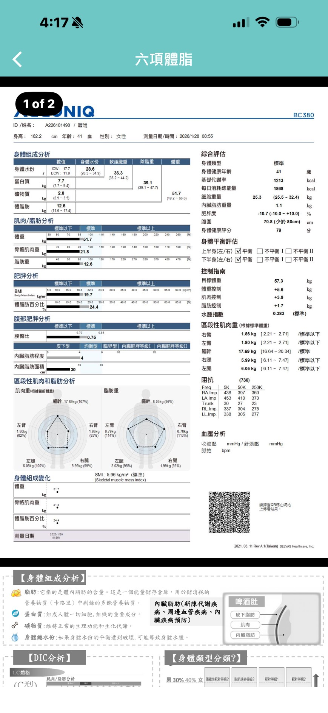

第一頁 · 現況解讀
妳的問題不是脂肪太多，
而是肌肉撐不住
InBody 數字告訴我們真相：體脂在正常範圍，真正的缺口是肌肉量。
身體線條由肌肉的飽滿度決定，不是脂肪的多寡。相同體脂率，肌肉多的人看起來更緊實有型。
目標不是「再瘦一點」，而是讓肌肉把身形撐起來。
現在的狀況
體重正常、脂肪正常，但肌肉不夠 → 視覺上鬆，腰部沒有線條感
目標狀況
增加骨骼肌 3–4 kg，相同體重下腰圍縮小、手臂與腿部更有型

第二頁 · 學理基礎
肌肉為什麼會長大？
給予夠大的刺激，身體才會啟動適應，這是肌肥大的核心機制。
-
1
機械張力（Mechanical tension）
舉重時肌肉纖維承受拉扯力，這是最主要的生長信號。重量越接近你的能力上限，信號越強。
-
2
代謝壓力（Metabolic stress）
訓練末端那種「燒灼感」，乳酸堆積促進生長激素分泌，進一步加強肌肥大效果。
-
3
肌肉損傷（Muscle damage）
訓練後的輕微酸痛，是肌肉纖維微撕裂修復的過程，修復後比原來更粗更強。
關鍵概念：漸進式超負荷（Progressive overload）
肌肉只有在超過現有能力的刺激下才會生長。做同樣的重量、同樣的次數，身體習慣了就停止適應。每隔幾週需要增加重量、次數或組數。
有氧（跑步、有氧課）
改善心肺功能，不直接增加肌肉量
第三頁 · 強度規劃
要練多重？用 RPE 找到對的強度
不用計算 1RM，用「自覺費力程度」來判斷，更直觀也更安全。
RPE 5–6
感覺很輕鬆，可以輕鬆說話 → 刺激不足，肌肉不會生長
RPE 7–8
稍微喘，最後 2–3 下有些吃力 → 初學者最佳目標區間
RPE 9–10
接近力竭，幾乎做不完 → 初學者暫時不需要，受傷風險較高
實作口訣：做完最後一下，還剩 1–2 下的餘力，這就是對的強度。
感覺太輕鬆 → 下次增加重量 5–10%。做不完 → 重量稍微降低。
組數與次數建議
- 每個動作 3 組
- 每組 8–15 下
- 組間休息 60–90 秒
初學者注意事項
- 動作品質優先再加重
- 感受目標肌肉收縮
- 記錄每次使用的重量
第四頁 · 頻率規劃
一週要練幾天？
頻率不是越多越好，恢復才是肌肉真正生長的地方。
每塊肌群每週刺激次數
1次/週
有效，但進步較慢，適合完全初學
2次/週
研究顯示是肌肥大最佳頻率，效率最高 ✓
3次/週
適合進階者，初學者容易累積疲勞
建議週課表（2–3天）
-
A
下半身 + 核心｜深蹲、臀推、腿推、腹肌
大肌群優先，燃脂效率高，改善臀腿線條
-
B
上半身 + 肩背｜划船、肩推、二頭、三頭
改善手臂與背部線條，肩膀撐開後視覺腰更細
-
C
全身綜合或弱點加強｜複合式動作
每週第三天視體力決定，不強求
第五頁 · 超補償概念
肌肉不在健身房長大，
在休息時長大
了解超補償曲線，就知道為什麼訓練後的恢復和訓練本身同樣重要。
最佳再次訓練時機：在「超補償高點」再刺激一次，能力才會累積向上。
太早練 → 沒充分恢復；太晚練 → 超補償效果消退。每週 2 次剛好對應這個節奏。
影響恢復的因素
- 睡眠（最重要）
- 蛋白質攝取是否足夠
- 整體熱量是否足夠
- 壓力水準（皮質醇）
潔西目前的狀況
- 睡眠品質 3/5 ⚠️
- 壓力 8/10 ⚠️
- 熱量目前偏低 ⚠️
- 這三項是最大阻力
第六頁 · 行動計畫
接下來，從這裡開始
不需要全部到位，找到最小可執行單位，先動起來。
-
1
飲食：把熱量補回來
目前平均 1,350 kcal，目標拉到 1,700–1,900 kcal。加堅果、酪梨、全蛋，不改變吃法只增加份量。
-
2
重訓：先建立動作模式
深蹲、臀推、划船三個動作學紮實，每週練 2 次，記錄重量，每 2–3 週嘗試增加。
-
3
恢復：睡眠是最有效的補充品
在能力範圍內提升睡眠品質，優先於任何訓練技巧。
-
4
追蹤：量腰圍，不只看體重
每月量腰圍一次，InBody 每 2–3 個月測一次，用數字確認方向。
三個月目標：骨骼肌 +1–2 kg，腰圍 −2–3 cm，整體感受更緊實有型。
這完全可以做到，而且不需要吃更少，只需要更聰明地練。